The aim of this project is to generate hybrid images by combining two images. The high frequency image tends to dominate the perception when looked from a closer distance and the low frequency(smooth) image domiates the view when moving farther from the image. By blending the high frequency of one image with low frequency of another image, a hybrid image is generated which gives a perception that varies with distance.
To genarate the hybrid image, the default behavior of MATLAB's inbuilt function imfilter has been imitated in this project in the my_imfilter function. The implementation of my_imfilter can be summarized as follows:
my_imfilter() function
%Implementation of the my_imfilter function
function output = my_imfilter(image, filter)
%Calculating the image and filter sizes
[img_row, img_col] = size(image(:,:,1));
[filter_row, filter_col] = size(filter);
output = [];
%Calclate the row and column margin, to pad the input image
pad_row = (filter_row - 1) / 2;
pad_col = (filter_col - 1) / 2;
%padding the input image with zeros
for i = 1:size(image,3)
padded_img(:,:,i) = padarray(image(:, :, i), [pad_row pad_col]);
end
%processing the output image by convoluting the filter and image
for k = 1:size(image,3)
for i = 1:size(padded_img,1)-filter_row+1
for j = 1:size(padded_img,2)-filter_col+1
%Calculate the output by convoluting the image and the filter
output(i,j,k) = sum(sum(filter.*padded_img(i:i+filter_row-1,j:j+filter_col-1,k)));
end
end
end
end
Hybrid images
As stated earlier, the high frequency image dominates the perception when looking from a closer distance and only the low frequency image tends to appear from a farther distance.
Here is the list of images which have been tested with this project along with the cutoff frequencies used. In all of the test inputs, the first two images are the original images used for processing, the next pair of images are the processed low and high frequency images followed by the hybrid image in different scales which illustrates different perceptions
Dog (low frequency) Cat (high frequency); cutoff_frequency = 7

 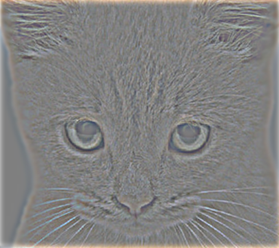
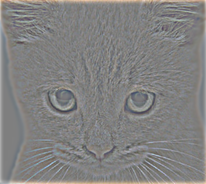
|
Einstein (low frequency) Marilyn (high frequency); cutoff_frequency = 5
Motorcycle (low frequency) Bicycle (high frequency); cutoff_frequency = 3
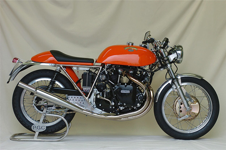
 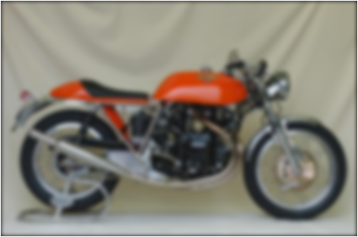
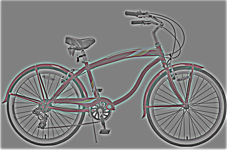
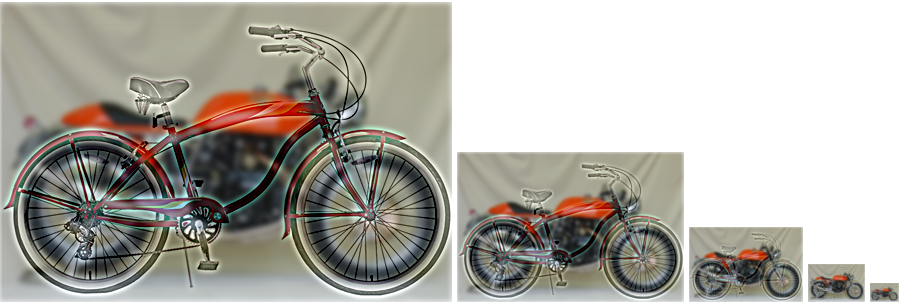
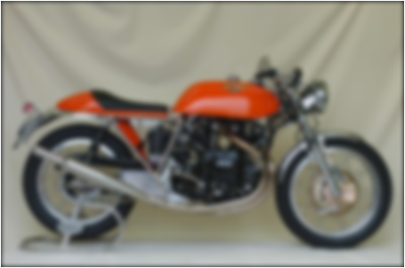
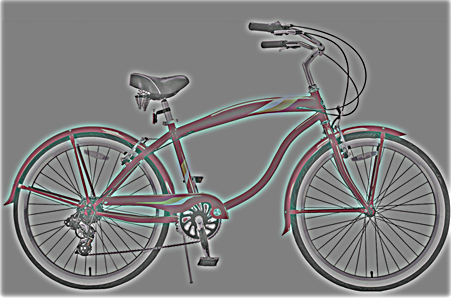
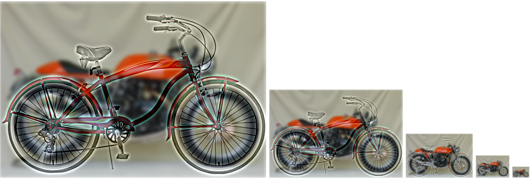
|
Bird (low frequency) Plane (high frequency); cutoff_frequency = 5
Fish (low frequency) Submarine (high frequency); cutoff_frequency = 6

 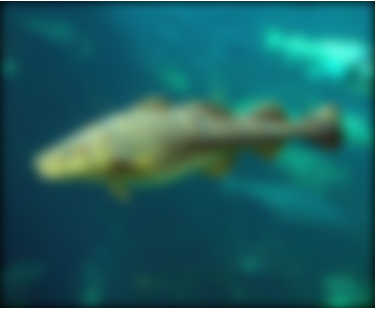
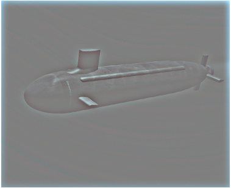
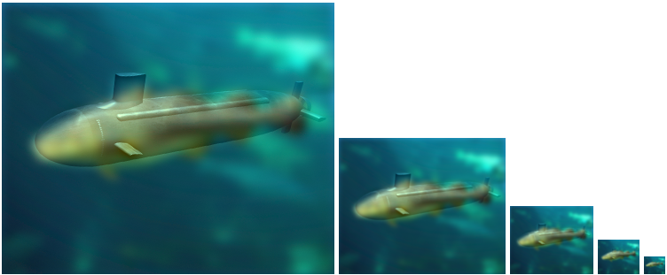
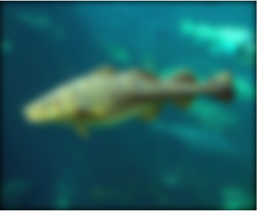
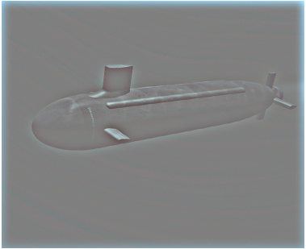
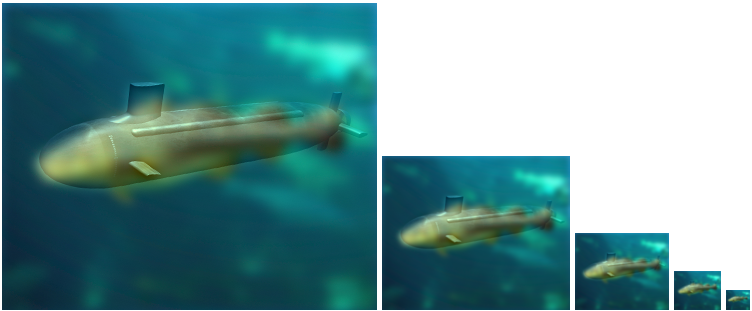
|
Submarine (low frequency) Fish (high frequency); cutoff_frequency = 6
|
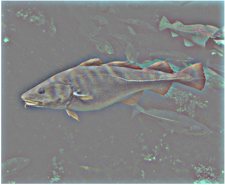
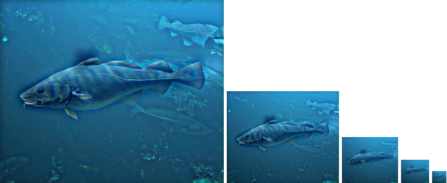
|

 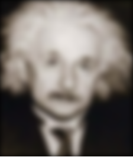
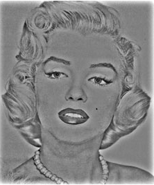
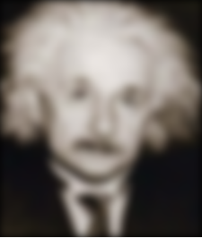
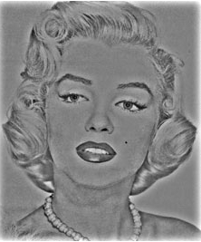


 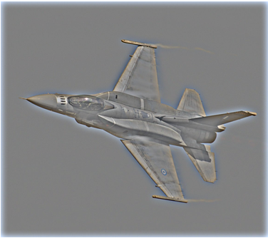
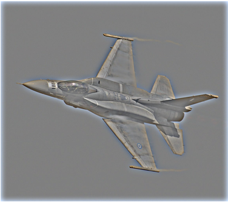